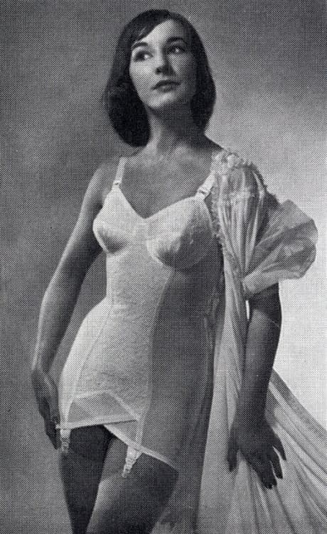
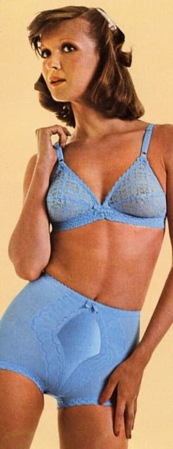
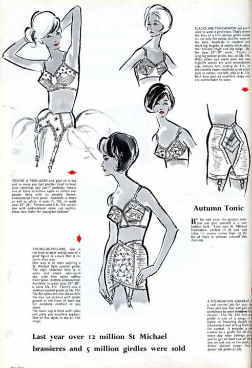
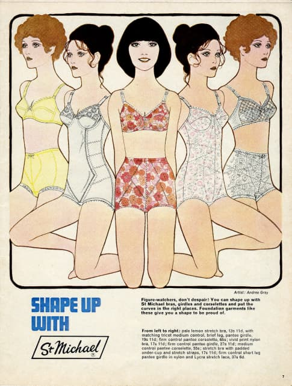

Нижнее белье: эволюция
История нижнего белья насчитывает сотни лет, но именно в XX веке оно обрело особое значение, став сначала символом угнетения женщины, а позже — ее свободы. В этом году исполняется 95 лет с тех пор, как британский бренд Marks & Spencer продал свой первый бюстгальтер. Именно с этого момента началась стремительная эволюция нижнего белья, ведь с каждой новой коллекцией марка совершенствовала материалы, крой и посадку. Как дизайнерам Marks & Spencer удалось влюбить в свои творения больше 30 миллионов женщин по всему миру?
Чтобы прояснить ситуацию, мы изучили архивы и немного покопались в истории.
Автор: Настя Обухова-Реми
Каким было нижнее белье раньше
Нижнее белье — это не просто куски ткани, закрывающие тело. По истории его трансформаций можно отследить события в мире, изменения, происходящие в социуме, моду и роль женщины в обществе. У каждой исторической эпохи есть свой символ, воплотившийся в форме нижнего белья. Видов нижнего белья на протяжении веков было несколько, но главными героями в той или иной вариации всегда оставались одни и те же предметы.
Повязка
Не только набедренная, как в Древнем Египте, но и нагрудная. В ту или иную эпоху повязки выполнялись из разных материалов и часто служили различным целям. Первое примитивное белье прикрывало тело от посторонних глаз. В Древнем Риме женщины использовали кожаные набедренные и нагрудные повязки для занятий спортом — такое облачение сильно напоминало современные комплекты нижнего белья. Тогда же женщинам навязывались жесткие стандарты красоты: чтобы выглядеть стройнее и спрятать формы, им приходилось плотно обматывать грудь и бедра широкими лентами изо льна.
Интересный факт:
Набедренная повязка считается прообразом трусов-танга. Впервые с древних времен этот вид нижнего белья был использован в 1939 году по приказу мэра Нью-Йорка, который попросил танцовщиц городских клубов прикрывать интимные места трусами, состоящими из двух тонких полосок ткани.
Сорочка
Основной вид нижнего белья, популярный в Средневековье и в эпоху Возрождения. Сначала нижняя рубашка, длинная и плотная, имела исключительно практическую функцию: защищать тело от погодных условий, грязи и посторонних глаз. В эпоху Возрождения сорочка превратилась в предмет роскоши — ее стали украшать шнуровкой и искусной вышивкой золотыми нитями. Нательная рубашка была практически единственным видом женского белья вплоть до начала XIX века. Правда исподнее оно напоминало в последнюю очередь: тонкие муслиновые платья с открытыми плечами и изящной отделкой выглядели по-настоящему роскошно и помпезно.
Панталоны
С развитием текстильного производства в XIX веке появилось все больше видов нижнего белья. Теперь это не только сорочки и рубашки, но и панталоны, которые также выполнялись из дорогой ткани, имели пышный декор и доходили женщине до пят. Со временем их длина в угоду моде укоротилась. Панталоны — одна из первых вещей, которая перекочевала в женский гардероб из мужского.
Корсет
Изначально корсет не имел ничего общего с нижним бельем, а был составной частью женского костюма. В XVI–XVIII веках он имел исключительно декоративную функцию: создавал прямую форму корсажа, был основой для драгоценностей и поддерживал тяжелые юбки, равномерно распределяя их вес на торс и плечи. Ближе к концу XIX века появляется тот самый корсет, утягивающий тело, корректирующий силуэт и деформирующий внутренние органы. С началом века прогресса корсет стал еще более затейливым: он доходил практически до колен и формировал S-образную женскую фигуру. Главная его функция состояла в том, чтобы придать телу идеальные и, как это ни парадоксально, естественные очертания — вновь в угоду стандартам
Бюстгальтер
Его изобрели в самом начале XX века, но популярность он обрел лишь спустя годы. Самый похожий на современный вариант бра был придуман в 1910 году американкой Мэри Фэлпс Джейкобс, которая пришила два носовых платка к мужскому галстуку. Популярность же пришла к бюстгальтеру только в 1930-х годах.
Интересный факт:
Человечество все еще не может решить, кому именно принадлежит изобретение бюстгальтера. Французы приписывают это своей соотечественнице Эрмине Кадоль, немцы — Кристине Хардт, а американцы — Мэри Джейкобс. Все три женщины придумали его практически одновременно.

Эволюция белья от Marks & Spencer
Бренд сделал все, чтобы каждая женщина смогла подобрать себе идеальный комплект белья вне зависимости от размера, образа жизни, возраста, комплекции и модных предпочтений. Marks & Spencer прошел долгий путь, чтобы стать настоящим экспертом в сфере нижнего белья.
Первый бра
Самый первый бюстгальтер был выпущен брендом в 1926 году. Главной его функцией было не просто поддерживать грудь, а скрывать ее объем. Причина тому — стандарты красоты того времени: в 20-х в моду вошли мальчишеские женские фигуры без явных изгибов и линий.
Интересный факт:
В 30–40-х годах одним из самых популярных материалов для пошива нижнего белья был искусственный шелк, который выглядел более роскошно, чем привычный многим хлопок или лен, но при этом был дешевле натурального шелка. Он создавался из синтетических волокон и целлюлозы.
Идеальная фигура
В первые годы существования бельевой линии Marks & Spencer делал ставку на корректирующие функции бюстов, панталон и корсетов, обещая в рекламе «гарантированно идеальную фигуру». Однако к 1939 году ассортимент бренда расширился: к примеру, в нем уже было около 30 вариантов бюстгальтеров различных фасонов.
Интересный факт:
Первые примерочные в магазинах бренда были открыты только в 70-х. До этого времени с выбором нижнего белья помогали специально обученные продавцы, которые снимали с покупательниц подробные мерки прямо в зале магазина.
Индивидуальный подход
В начале 50-х годов Marks & Spencer вдохновился американскими ретейлерами и начал продавать бюстгальтеры с различным объемом чашек: маленькая, большая и средняя. До этого времени в ассортименте существовал лишь один размер. Нововведение было встречено с энтузиазмом: в 1953 году марка продавала 125 тысяч бра в неделю. Успех был связан еще и с тем, что Marks & Spencer начал создавать белье для молодых женщин и подростков.

Еще идеальнее
В 50-х и 60-х дизайнеры бренда начали активно развивать направление корректирующего белья. Акцент был сделан не только на эстетическую составляющую, но и на комфорт. Бренд осваивал новые технологии и экспериментировал с материалами. Благодаря этому в линии появились удобные модели поясов из стрейчевой сетки и лайкры, полностью литые нейлоновые корсеты, а также бюстгальтеры с поролоновыми вставками.
Комфорт
Постоянное ношение бра создавало дискомфорт и неприятные ощущения, поэтому дизайнеры бренда постоянно работали над улучшением моделей, чтобы сделать носку более приятной. Благодаря их стараниям в 1964 году бренд выпустил в продажу бюстгальтеры с эластичными регулируемыми лямками, которые обеспечивали и комфорт, и качественную поддержку груди.

Бюстгальтер-комбинация
В то же время Marks & Spencer выпускает интересный вариант нижнего белья, вдохновленный парижским стилем, — бра, соединенное с комбинацией. Женщины пришли в восторг от новинки, и она стала самой продаваемой моделью нижнего белья 60-х годов. Комбинация была удобна еще и тем, что ее можно было носить с платьями и юбками модной длины мини.

Пояса-трусики
Популярный в 60-х вид нижнего белья, объединяющий в себе высокие трусики и пояс для чулок. Трусики выпускались в сотнях расцветок и узоров, а также имели три степени поддержки — от легкой до жесткой. Тема коррекции фигуры все еще была актуальна. Однако ближе к 70-м годам контроль за недостатками фигуры становится все меньше и практически сходит на нет — в повседневный обиход входят кружевные и хлопковые трусы без корректирующих функций.

Новая эра бра
Этот бюстгальтер стал бестселлером в 1972 году: всего за полтора года его существования бренд продал миллион экземпляров. Секрет успеха прост: дизайнеры убрали подкладку, сделав бра очень тонким и практически прозрачным, при этом сохранив поддерживающие функции.
Спортивный настрой
На 80-е годы Европа и Америка «заболели» спортом, а в моду вошли подтянутые стройные фигуры, шейпинг и естественные расслабленные линии в одежде. Marks & Spencer быстро уловил новую тенденцию и выпустил свою первую линию спортивного белья, которое подходило для любых видов тренировок.
Свадебное белье
Прежде чем создать в 90-х первую свадебную коллекцию белья, сотрудники Marks & Spencer опросили более 500 невест. Итогом такой кропотливой исследовательской работы стала женственная и нежная линия без лишних кричащих деталей.
Особенный бюстгальтер
В начале нулевых бренд создал модели послеоперационного бюстгальтера, но в 2006 году полностью пересмотрел линейку. Новое белье было создано после консультаций с женщинами, которые перенесли полную и частичную мастэктомию. Часть средств с продажи каждого бра была направлена в благотворительный фонд по борьбе с раком молочной железы.
Умное белье
В 2010-х специалисты Marks & Spencer стали разрабатывать максимально функциональное белье, решающее сразу несколько важных задач. Так, например, в линейку корректирующего белья вошла длинная модель трусов-слимеров, в состав ткани которой входил витамин Е, алое вера и кофеин — для антицеллюлитного и увлажняющего действия. Другим ноу-хау бренда стала линия белья The Perfect Poise для поддержания правильной осанки.
С любовью, Рози
В 2012 году Рози Хантингтон-Уайтли создала свою первую коллекцию нижнего белья в коллаборация с Marks & Spencer. Линия получилась женственной, сексуальной, с легким налетом ретро, а потому пользовалась огромной популярностью у женщин. Рози создает белье и одежду для дома по сей день. Сотрудничество бренда с супермоделью считается одной из самых продолжительных звездных коллабораций за всю историю моды.
Максимальный комфорт
В то время как романтичное и сексуальное нижнее белье остается идеальным вариантом для особых случаев, на арену выходят новые максимально комфортные модели бра и трусиков. Специалисты Marks & Spencer прилагают максимум усилий, чтобы внедрить в производство новые технологичные материалы. Логичным продолжением моды на комфорт становится линия FlexiFit, в которую вошли максимально удобные бюстгальтеры без косточек и трусы. Для сна, для занятий спортом, на каждый день — в любой модели линии использована специальная технология, обеспечивающая четырехстороннее растяжение и идеальную посадку. Белье из этой линии сидит как вторая кожа.
© 2021 HSM production